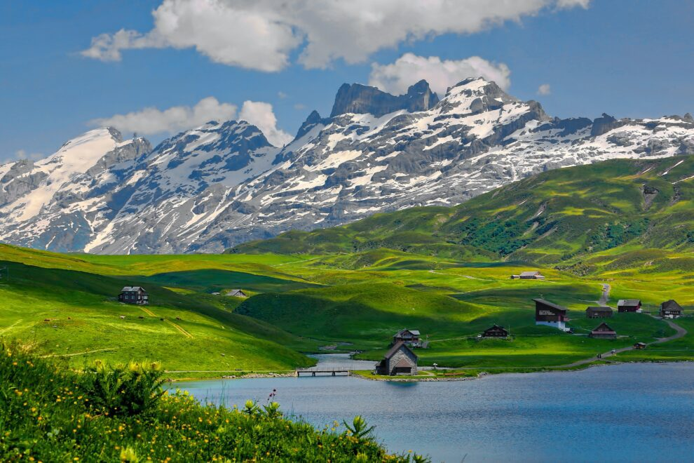

Meu nome é André Luiz de Andrade Carvalho, tenho 25 anos e sou natural de Curitiba. Sou formado como Técnico em Meio Ambiente, área que me ensinou a importância da responsabilidade social e ambiental. No entanto, ao longo do tempo, descobri uma afinidade especial com a tecnologia, o que me levou a buscar uma nova formação na área de Análise e Desenvolvimento de Sistemas. Meus hobbies me ajudam a relaxar, manter o equilíbrio e renovar as energias para os desafios do dia a dia. Entre minhas metas pessoais estão concluir minha graduação, construir uma carreira sólida na área da tecnologia, conquistar minha casa e meu carro próprio. Essa é um pouco da minha história até aqui, um caminho em constante construção, movido pela vontade de aprender, crescer e realizar.
| Japão | |
| Suíça |  |
| Egito |